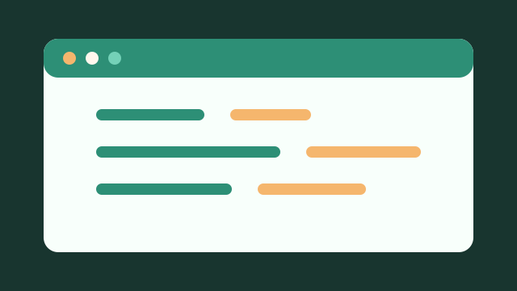
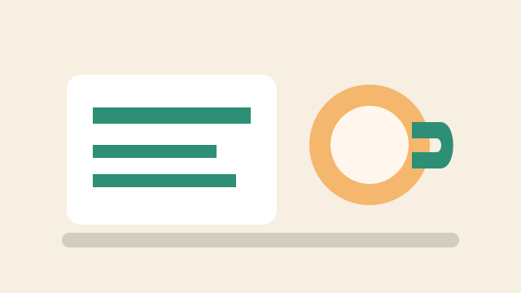
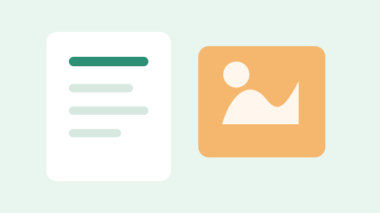

2026-05-18 · 技术 · 8 分钟
给自己的前端工程化清单
从目录结构、样式策略、测试到部署，把那些每次都要重新想一遍的判断沉淀下来。
阅读全文

2026-05-12 · 生活 · 5 分钟
周末整理房间时想到的事
空间变清爽之后，脑子里那些悬着的小任务好像也更愿意一个个落地。
阅读全文

2026-04-29 · 笔记 · 6 分钟
读完一本书之后，我怎么做二次整理
不是把摘抄堆起来，而是把它们重新连接到自己的问题、项目和下一步行动里。
阅读全文